Here is an example where spherical coordinates P1 and Q1 undergo a coordinate transformation and become P2 and Q2; the transformation consists of a rotation of the coordinate system through angles A, B and C about the z, new y and new z axes respectively:
REAL A,B,C,R(3,3),P1,Q1,V1(3),V2(3),P2,Q2
:
* Create rotation matrix
CALL sla_EULER('ZYZ',A,B,C,R)
* Transform position (P,Q) from spherical to Cartesian
CALL sla_CS2C(P1,Q1,V1)
* Multiply by rotation matrix
CALL sla_MXV(R,V1,V2)
* Back to spherical
CALL sla_CC2S(V2,P2,Q2)
Small adjustments to the direction of a position
vector are often most conveniently described in terms of
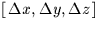. Adding the correction
vector needs careful handling if the position
vector is to remain of length unity, an advisable precaution which
ensures that
the  components are always available to mean the cosines of
the angles between the vector and the axis concerned. Two types
of shifts are commonly used,
the first where a small vector of arbitrary direction is
added to the unit vector, and the second where there is a displacement
in the latitude coordinate (declination, elevation etc.) alone.
components are always available to mean the cosines of
the angles between the vector and the axis concerned. Two types
of shifts are commonly used,
the first where a small vector of arbitrary direction is
added to the unit vector, and the second where there is a displacement
in the latitude coordinate (declination, elevation etc.) alone.
For a shift produced by adding a small  vector to a
unit vector 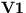, the resulting vector 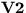 has direction
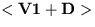 but is no longer of unit length. A better approximation
is available if the result is multiplied by a scaling factor of
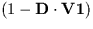, where the dot
means scalar product. In Fortran:
vector to a
unit vector 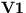, the resulting vector 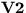 has direction
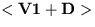 but is no longer of unit length. A better approximation
is available if the result is multiplied by a scaling factor of
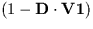, where the dot
means scalar product. In Fortran:
F = (1D0-(DX*V1X+DY*V1Y+DZ*V1Z))
V2X = F*(V1X+DX)
V2Y = F*(V1Y+DY)
V2Z = F*(V1Z+DZ)
The correction for diurnal aberration (discussed later) is an example of this form of shift.
As an example of the second kind of displacement
we will apply a small change in elevation 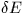 to an
 direction vector. The direction of the
result can be obtained by making the allowable approximation
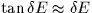 and adding a adjustment
vector of length normal
to the direction vector in the vertical plane containing the direction
vector. The z-component of the adjustment vector is
direction vector. The direction of the
result can be obtained by making the allowable approximation
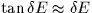 and adding a adjustment
vector of length normal
to the direction vector in the vertical plane containing the direction
vector. The z-component of the adjustment vector is
 ,and the horizontal component is
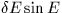 which has then to be
resolved into x and y in proportion to their current sizes. To
approximate a unit vector more closely, a correction factor of
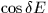 can then be applied, which is nearly
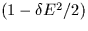 for
small . Expressed in Fortran, for initial vector
V1X,V1Y,V1Z, change in elevation DEL
(+ve
,and the horizontal component is
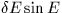 which has then to be
resolved into x and y in proportion to their current sizes. To
approximate a unit vector more closely, a correction factor of
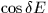 can then be applied, which is nearly
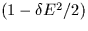 for
small . Expressed in Fortran, for initial vector
V1X,V1Y,V1Z, change in elevation DEL
(+ve  upwards), and result
vector V2X,V2Y,V2Z:
upwards), and result
vector V2X,V2Y,V2Z:
COSDEL = 1D0-DEL*DEL/2D0
R1 = SQRT(V1X*V1X+V1Y*V1Y)
F = COSDEL*(R1-DEL*V1Z)/R1
V2X = F*V1X
V2Y = F*V1Y
V2Z = COSDEL*(V1Z+DEL*R1)
An example of this type of shift is the correction for atmospheric refraction (see later). Depending on the relationship between and E, special handling at the pole (the zenith for our example) may be required.
SLALIB includes routines for the case where both a position
and a velocity are involved. The routines
sla_CS2C6
and
sla_CC62S
convert from 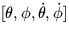to  and back;
sla_DCS26
and
sla_DC62S
are double precision equivalents.
and back;
sla_DCS26
and
sla_DC62S
are double precision equivalents.
SLALIB --- Positional Astronomy Library